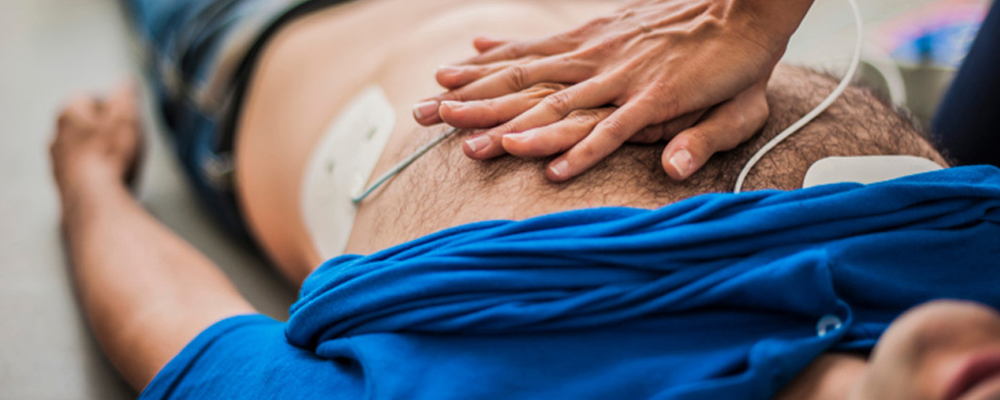

Når sekundene teller...
Quiz
Førstehjelp-Quizen
Er du nærmest den som blir akutt syk eller skadet er det du som må ta ansvar og hjelpe. Din kunnskap og innsats kan redde liv.
Test deg selv med denne quizen og se hvordan du ligger ann blant vennene dine!
HLR
Hjerte-lunge-redning (HLR)
Hjerte-lunge-redning skal bare utføres på personer som er bevisstløse og ikke puster normalt. Du må først undersøke pasienten i inntil 10 sekunder for å kunne avgjøre dette. Når du konkluderer med at pasienten er bevisstløs og ikke puster normalt, ring 1-1-3 og begynn med HLR
Hjerte-lunge-redning skal bare utføres på personer som er bevisstløse og ikke puster normalt. Du må først undersøke pasienten i inntil 10 sekunder for å kunne avgjøre dette. Når du konkluderer med at pasienten er bevisstløs og ikke puster normalt, ring 1-1-3 og begynn med HLR
- Se etter tegn til liv
- Rist forsiktig i pasienten og rop «Er du våken?»
- Gi frie luftveier
- Sjekk om pasienten puster normalt i inntil 10 sekunder
- Puster ikke normalt? Rop etter hjelp
- Ring 1-1-3 og sett mobiltelefonen på høyttaler
- Gi 30 brystkompresjoner
- Se etter tegn til liv
- Rist forsiktig i pasienten og rop «Er du våken?»
- Gi frie luftveier:
- løft frem/opp haken ved hjelp av 2 fingre
- legg en hånd på pannen og bøy hodet bakover
- Puster ikke normalt?
- Rop på hjelp, ring 1-1-3 og sett mobiltelefonen på høyttaler
- Gi 5 innblåsinger
- Gi 30 brystkompresjoner:
- komprimer med 1 eller 2 hender avhengig av barnets størrelse
- trykk ned 1/3 del av brystkassens dybde
- Trykk med en takt på 100 -120 kompresjoner pr. minutt
- Gi deretter 2 innblåsinger
Fortsett med 30 brystkompresjoner og 2 innblåsinger (30:2) helt til ambulansepersonell eller annet redningspersonell tar over.
- Se etter tegn til liv
- Gi frie luftveier
- kun løft frem/opp haken ved hjelp av 2 fingre
- ikke bøy hodet bakover men hold hodet i nøytral posisjon ved å legge en hånd på pannen
- Puster ikke normalt?
- Rop på hjelp, ring 1-1-3 og sett mobiltelefonen på høyttalende
- Gi 5 innblåsinger
- Gi 30 brystkompresjoner
- bruk kun 2 fingre til å komprimere med
- trykk ned 1/3 del av brystkassens dybde
- Trykk med en takt på 100 -120 kompresjoner pr. minutt
- Gi deretter 2 innblåsinger
Et viktig førstehjelpstiltak er å bruke hjertestarter.
Dersom du har tilgang på en hjertestarter så bruk den. Alle hjertestartere som er tilgjengelige for publikum leveres med norsk stemme som veileder deg i bruk. Følg denne veiledningen.
Det er ikke farlig å koble på en slik hjertestarter.
Den vil ikke avgi støt dersom den analyserer situasjonen til at den ikke skal gjøre det. Du kan ikke gjøre noe galt.